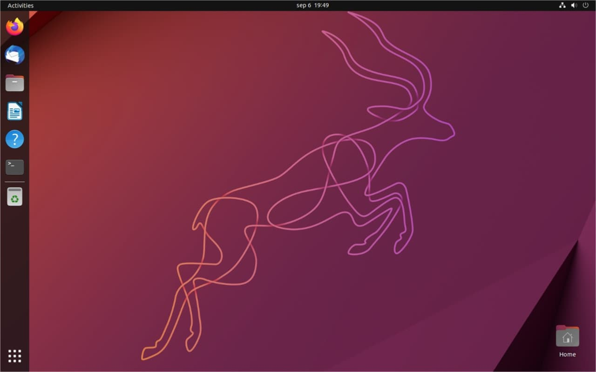

¿ Como instalar Ubuntu ARM Server ?
Para instalar Ubuntu en MAC con Chip Silicon es mejor instalar el Ubuntu Server con arquitectura ARM.
Guia para descargar de de páginas oficiales Ubuntu ARM
Esta versión nos proporciona una navegación fluida y nos permite una mejor ajuste de consumo de batería.
Todo el proceso de instalación es en consola, pero no te preocupes es sencillo.
Al final de la instalación se instalará el modo gráfico y sera más facil de usar.
Por último haremos unos ajustes de red para que todo funcione correctamentente.
Dejo aquí las instrucciones de la instalación de Ubuntu ARM.
Dejo aquí la guía de los Ajustes de UTM y máquinas virtuales.
Dejo aquí página con video incrustado de como mostrar el Network Manager para mostrar los ajustes de Red en Ubuntu ARM
Como compartir archivos, aquí.